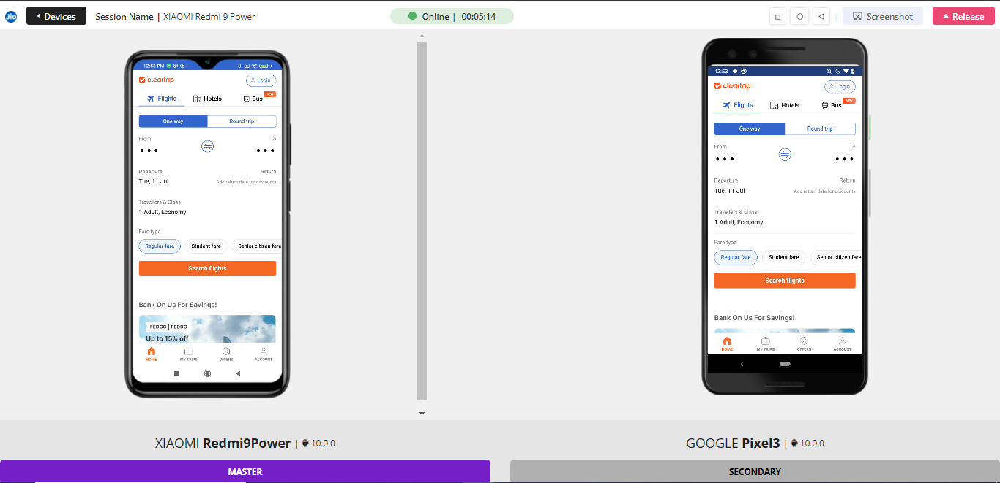
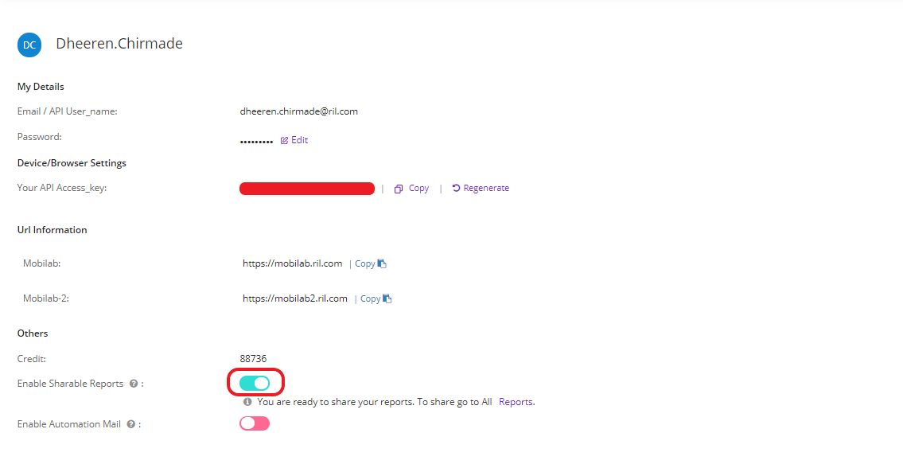

What is Mobilab
Mobilab is a cloud based platform for testing mobile applications. It hosts a variety of Android and iOS devices which can be accessed from anywhere and at anytime for the testing purpose. It is a continuous testing platform where users can perform manual as well as automation testing for both apk/ipa as well as browser based applications. It integrates with automation tools like Appium and Espresso, and works with other tools such as Jenkins, Eclipse, and Android Studio.
Login
i. Users can login to mobilab portal through mobilab.ril.com.
ii. Users will have to enter Domain ID and password.

Accessing devices
-
After logging in, users will be redirected to the Start page. On the Start page, click on the devices tab.
-
Now, users will be redirected to the Devices page where they can see all the available devices.
Find a device
-
Users can search a device in Mobilab using the Search Bar. The devices can be searched by the name or by the brand.
-
Also, the users can filter the devices by OS, Brand, Screen Size, Network and Device Location using the Filter feature next to the Search Bar.
Get device location
-
On hovering on the devices, users will get More details button. Users have to click on that button to get the device details.
-
After clicking More details button, users will get the device location along with rest of the device details.
Book a device
-
Users can book a device for a scheduled activity by clicking on the bookmark icon at the top right corner of the device card.
-
Then, users have to enter date, time and duration and type of booking, then click on the Book button. In this way the device gets booked for the mentioned date,time and duration.
-
Users can view the booked device from "My bookings" section.
My Data
In My Data section, users can store data of various file types for eg. apk, ipa, jpeg, png etc. Users can view all the stored files by clicking on My Data from sidebar.
Upload files in My Data
-
On the "My Data" Page, users have to click on the "Upload File" button, select the file (apk/ipa/jpg/png) from the local machine which is to be uploaded. The file will get uploaded to My Data
Resigning an iOS app for installation
-
Users have to click on the three dots of the apple icon present under Action and click on "Re-sign" icon.
-
Users can verify if resigned application is generated by clicking on ("+") sign.
Instrumenting apps for Image Scan and Biometric Authentication
-
Users can instrument their Android/iOS application and install it on the device to test for Image Scan or Biometric Authentication. For this, users have to click on the three dots on the Android/Apple icon present under Action and click on "Sensor Testing"
-
The APK/IPA file will get instrumented and a success notification will appear on the bottom. Once the iOS app is instrumented, users can click on ("+") icon against the app to confirm.
Manual Session
Connecting a device
-
On the Devices page, users have to click on the connect button at the bottom of the device.
-
After clicking connect button, users are redirected to the Device Session page, where they can perform various functions on the device to test their apps.
Object Spy Mode
The object spy mode enables the users to inspect the app's structure on Android/iOS device. It has a bilateral view where users can
click on an element on one side and view the element details on other side.
To open Object Spy Mode:
-
On device session page, users have to select Object Spy mode from the left Pane under All Actions.
-
Users have to click on the Start button to start the inspecting tool.
-
Now, on left side, users can hover/click on the elements on the device screen and on right the corresponding inspection tools, elements attributes, values, etc are displayed
-
Once the attribute and value of the element is highlighted, users have to click on copy icon to copy its information to use it in the scripts.

-
Users have to click on Exit Spy Mode or ESC button to return the device to the Default Mode.
Automation
Appium
1. Capability Generator
Users can generate automation capabilities and use them in their scripts to run automation.
To generate capabilities, users have to follow the mentioned steps:
-
On the Start page, users have to click on the Capabilities.
-
Users will be redirected to the Capability Configurator page where users have to select all the required attributes of the capabilities and thes click Generate Capabilities.
-
Users can copy the generated capabilities and used them in the script for running the automation
2. Providing URL in Automation Testing
Users will have to provide URL in automation testing as per device location in order to connect to device via automation script.
For Example:
-
For devices which have location as mobilab:
driver = new AndroidDriver<WebElement>(new URL("https://mobilab.ril.com/appiumcloud/wd/hub"), capabilities); -
For devices which have location as Mobilab-2:
driver = new AndroidDriver<WebElement>(new URL("https://mobilab2.ril.com/appiumcloud/wd/hub"), capabilities);
3. Providing URL in API Calls
Users will have to provide URL in API calls as per device location.
For Example:
- For mobilab: https://mobilab.ril.com/api/access
- For Mobilab-2: https://mobilab2.ril.com/api/access
Espresso
1. Espresso-UI
Users can execute Espresso test cases using UI through following steps:
- Users have to click on Espresso from the Start page which will redirect to the Espresso page.
- On the Espresso page, users have to select the TestRunner Type, Application APK, Test Cases APK and the execution time. After selecting all the required fields, users have to click on Next.
- The users have to select the device on which test needs to be performed by clicking on the plus icon next to the device. After selecting the device, users have to click on Next button.
- Users have to confirm the test cycle and click on schedule button to start the execution.
- After scheduling the test, users can click on My active sessions on sidebar where user can see the on going session of the execution.
- Users have to click on the Live-View icon next to session name.
- Users will be redirected to the Live-View page where they can see the live execution of the test cases.
2. Espresso JAR File
We have updated JAR file for Espresso testing.
PFB the link for the same:
PFB the flags updated in JAR file:
- # Clear Package Data after each suit/test case
ClearPackageData = false - # Grant all required permission by the app during installation
AppPermissionGrant = false - # If uses wants in each run to upload the updated apks
#true will updated each time and false will not upload and use the recent uploaded files.
AppUpload = true
Mobilab Certificates
Users need to include the SSL certificates of mobilab and Mobilab-2 in the Java of their machine for connecting the devices via script for Automation testing.
PFB the link for Certificates and Guidelines for trusting the same.
Mobilab Certificates and Guidelines to trust the certificate
New Added Features
Synchronous Mode App Testing Using Follow Me feature
The Follow Me feature enables the users can perform manual app tests in synchronous mode on one device by replicating the actions performed on another device.
For using Follow Me feature, users have to instrument the app for its readiness.
Following are steps for using Follow Me feature:
-
Users have to click on the three dots on the Android icon present under Action and click on "Follow Me". Once,the instrumentation is completed, a success notification will appear on the bottom.
-
Now, users have to go to start page and click on Follow Me. Users will be redirected to the Follow Me page.
-
On the Follow Me page, users have to follow the steps that are mentioned on the page:
-
Choose the instrumented apk file
-
Next, users have to select 2 devices. Users can select 2 devices strictly within the same cluster (either mobilab or mobilab 2).
-
Now, users have to select a master device and then click on Start Session button.
Once the app is installed in both the devices, users can now manually test the app on two devices simultaneously.
 -
Visual AI
Visual Testing, also called visual UI testing, is the answer to many prevailing problems. It verifies if the software user interface (UI) appears accurately to all users. Visual Testing ensures that each element on a web page or a web/mobile application appears in the right shape, size, and position.
Performing visual testing enables us to see if each element on a web page, web/mobile app appears in the right shape, size, and position. It also checks if these elements appear and function perfectly on a variety of devices and browsers. In other words, visual testing factors in multiple environments, screen sizes, OSs, and other variables that affect the applications UI.
Limitations:
- Both Base Image and Differentiating format should be in the same format (supported formats - PNG, JPG)
- Both Base Image and Differentiating Image resolutions have to be the same. The User will also need to ensure that the resolution of the device you perfom the test on has the same resolution as well.
- Image resolution should be same as the device resolution.
You can perform the Visual Testing using two methods:
Transaction
Users can analyze the CPU usage, memory, battery status, response times, etc. when a particular action or a series of actions are performed as part of the app usage.
- Users have to install an application on the device.
- Users have to click on the Transaction tab from top right of the device session page.
- Next, users have to choose the app which is to be monitored.
- Users have to add a name for the transaction and then click on Start button.
- After clicking Start button, users can perform the necessary action on the application as the timer on the right side goes on. Click on Stop after completing the Action.
- After the transaction ends, users have to click on View report to get detailed report of the transaction.
- After clicking View report button, users will be redirected to the detailed report page of the transaction.
Reports and Analytics
Performance Metrics during Testing Session
Users can view the performance metrics for mobile application running on the device during a session.
-
Users have to install an application on the device.
-
Now, users have to select Analysis tab from right side and then choose app to start performance analysis.
-
Once the app is selected, users will be able to see the performance metrics like memory usage, CPU usage and battery consumption.
Reports of completed sessions
Users can view the report of a session once the testing is completed and the device is released.
-
Users have to click on Reports from the sidebar.
-
On All Reports page, users have to click on View Report icon under Action.
-
Users can now view the selected device details, Performance charts, logs, snapshots and videos for the session selected.
Sharing a test report
Users can share the reports generated for the testing sessions.
-
Users have to click on the profile icon and select Profile from the dropdown list.
-
On the profile page, users have to switch on the toggle button to enable sharable report.
 -
On Reports page, users have to click on the copy icon under Action. This will copy the report link which can be share through emails or other modes of communication.
Do's and Don'ts
- Please release device after use so that other user can use the device.
- Please do not change any settings on the devices.
- Please do not update the operating system on the devices.
- Please do not shutdown/reboot any devices.
- Please do not set any passcode on the devices.
- Please do not remove or change Apple ids and Google accounts from the devices.
Mobilab Support Page
Users can raise support request
We have created a support page for addressing the user issues that one might face while using Mobilab. The users are expected to raise a support ticket on Azure Devops using the following link. We request the users to use this link only to reach to us regarding Mobilab issues.
Reference Links
-
pCloudy Documentation:
https://www.pcloudy.com/docs/introduction-to-pcloudy -
pCloudy Sample Projects:
https://github.com/pankyopkey/pCloudy-sample-projects -
API Documentation:
https://content.pcloudy.com/apidocs/index.html